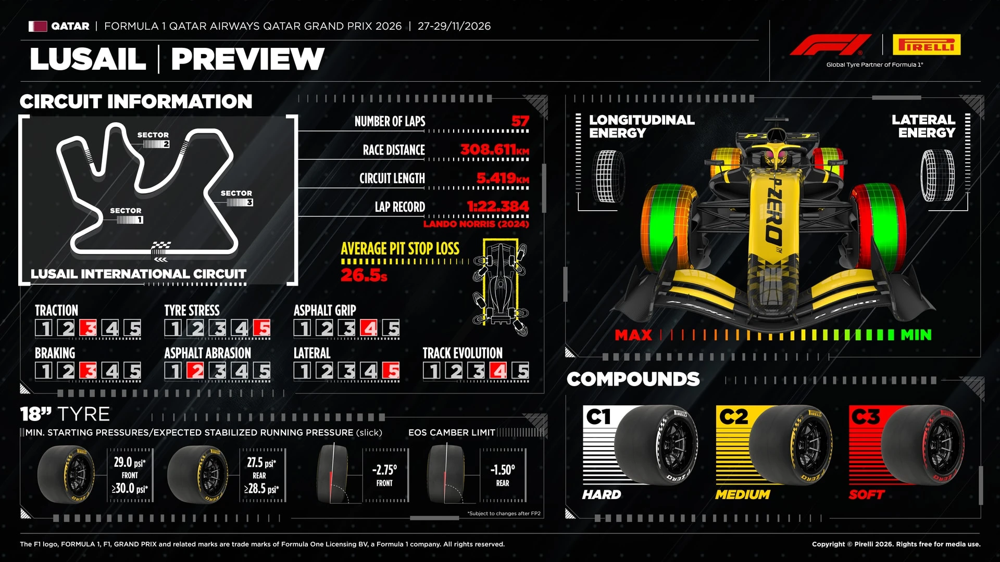
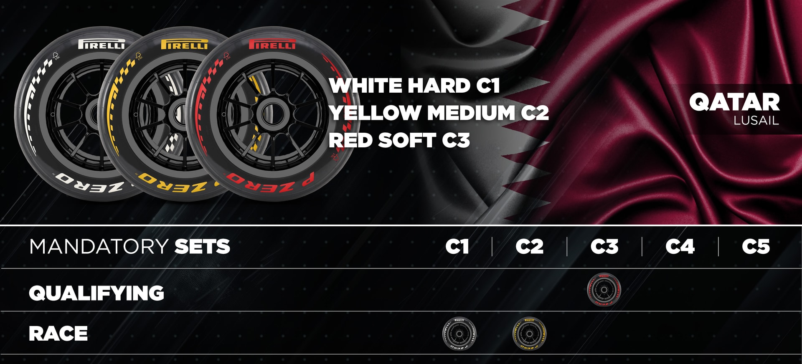

Tyres & Strategy
Compound allocation, degradation and the strategic shape of the race.
Race tyre availability
No verified pre-race set inventory has been collected for this weekend. These charts normally appear after qualifying, not with the earlier compound nomination. A missing chart is not proof of non-publication, and no zero counts or FastF1-derived inventory are substituted.
Source discovery checked 2026-11-27T21:46:49+00:00.
FIA official tyre documents
Official source; curated transcription may await review. Linked PDFs are the authority. Discovery does not extract or verify numeric values, and does not replace the curated material below.
Last successful FIA document discovery: 2026-11-27T21:45:50.307552+00:00. This is retrieval time, not issue time; newer revisions may exist.
What this circuit does to a tyre
Sustained high-speed loading puts the front-left under particular stress. For 2026, Pirelli announced a 27-lap maximum stint per set in agreement with the FIA, making the scheduled 57-lap race a minimum two-stop event. The reviewed Pirelli preview confirms the C1/C2/C3 nomination, mandatory sets and event prescriptions; the conflicting Formula1.com set-allocation reports are not a post-qualifying remaining-set chart. Formula1.com 26 November guide lists a 26.17-second pit-stop time-loss figure; this is not an individual stop duration.
Why it matters here
Moderate. The main straight offers a genuine chance, but the flowing middle sector makes following closely difficult and rewards clean air.
Where passing is hard, strategy and the undercut decide the race; where it is easy, teams can afford to run longer and recover track position on merit.
Pirelli's event preview



The latest FIA event listing was checked after FP2 through Document 23 and contains no later pressure table. The displayed values remain the latest published figures, not a post-FP2 reaffirmation.
Qatar compounds and 27-lap tyre-set limit
Pirelli nominated C1 Hard, C2 Medium and C3 Soft for Qatar. The 13 November Pirelli table confirms that compound selection; FIA Document 13 V2, page 2, separately identifies C3 as the qualifying mandatory set and C1 and C2 as the race mandatory sets. Neither source is a driver-by-driver remaining-set inventory.
Two Formula1.com articles currently give different pre-weekend set counts. The 10:05 UTC preview says two C1 Hard, three C2 Medium and eight C3 Soft sets, and separately says an extra Soft is reserved for Q3. The 10:43 UTC explainer explicitly lists 13 sets as two C1 Hard, four C2 Medium and seven C3 Soft. The earlier preview, which returned HTTP 404 when checked before, is accessible again on 27 November; the published allocation discrepancy remains unresolved. Pirelli confirms the compounds and 27-lap cap, not the per-driver set totals. Do not treat either article as a remaining-set inventory. Formula1.com also says a dry race requires two different slick compounds. Formula1.com tyre preview, 10:05 UTC (accessible again) · Formula1.com 27-lap explainer, 10:43 UTC · FIA Document 13 V2, page 2.
On 24 November, Pirelli announced a maximum 27-lap stint per set, agreed with the FIA, and said the race will require at least two stops. At the full scheduled 57-lap distance, two sets cover only 54 laps. The FIA's Qatar competition notes (Document 13, Pirelli Preview V2 / Issue B, page 2) independently specify the same limit. Pirelli's official Qatar tyre briefing, 24 November.
Document 13 V2 clarifies the 27-lap cap's cumulative count across all track sessions, including laps under the Safety Car or Virtual Safety Car. For the Race, count each lap started after the start signal and before the end-of-session signal; reconnaissance and formation laps before the start and laps after the end signal do not count. In every other session, any lap started counts, including post-session laps to return to the pits and practice-start laps. A lap started but not completed counts in full, and a mixed set takes the mileage of its highest-mileage tyre. Document 14 V2 repeats this rule and clarifies that a set exceeding its limit because pit entry was closed must be changed at the earliest safe opportunity after it reopens; when both cars of a team exceed the limit this way, at least one must pit at that opportunity. The second car may pass pit entry once before entering. Formula1.com's 25 November explainer describes the earlier rule. Formula1.com, 25 November explainer · FIA Document 13 V2, page 2 · FIA Document 14 V2, page 7.
The FIA's official Qatar competition notes (Document 13 V2 / Issue B, page 2) give the latest pressure and compound prescriptions. Minimum starting and expected stabilized pressures are in psi:
| Compound | Front start | Front stabilized | Front camber | Rear start | Rear stabilized | Rear camber |
|---|---|---|---|---|---|---|
| Slicks | 29.0 | >=30.0 | -2.75 degrees | 27.5 | >=28.5 | -1.50 degrees |
| Intermediates | 30.0 | >=31.0 | -3 degrees | 27.5 | >=28.5 | -2 degrees |
| Wets | 28.5 | >=31.0 | -3 degrees | 25.5 | >=28.5 | -2 degrees |
The sheet also specifies C1 and C2 as mandatory race tyres, C3 as the Q3 tyre, and caps each set at 27 laps across all sessions and tyre history. Pirelli's separate 24 November event infographic prints expected stabilized pressures as >30.0 psi front and >28.5 psi rear; FIA Document 13 V2 / Issue B uses >=30.0 and >=28.5 psi. Preserve the source-specific inequalities instead of silently normalizing them. Pirelli marks its figures subject to change after FP2. The latest FIA event listing, rechecked after FP2 through Document 23, contains no later pressure table; these remain the latest published figures, not a post-FP2 reaffirmation. Pirelli's graphic lists 26.5 seconds average pit-stop time loss, while Formula1.com's 26 November guide reports 26.17 seconds. The sources do not state a shared method, so retain these as separately attributed time-loss estimates, not stationary wheel-change durations. These event prescriptions do not resolve the published Formula1.com discrepancy in driver-by-driver set allocations; both articles were accessible when reviewed on 27 November. Neither article should be used as a remaining-set inventory. FIA Document 13 V2 - Pirelli Preview, page 2 · Formula1.com tyre preview, 10:05 UTC · Formula1.com 27-lap explainer, 10:43 UTC · Pirelli's official Qatar tyre briefing, 24 November.
Pirelli F1 chief engineer Simone Berra's earlier Motorsport.com interview adds details about session-by-session tyre use and remaining allowances after Saturday running. Motorsport.com report and Berra interview, 20 November. Coffee Corner Motorsport's independent 24 November preview says practice and qualifying laps consume each set's allowance. Coffee Corner Motorsport, Qatar tyre preview · Pirelli compound selection and graphic, 13 November.
Two-stop examples — not a prediction
For a full 57-lap dry race, a fresh Medium / fresh Hard / fresh Medium could stop after laps 19 and 38: three 19-lap race stints. An early Safety Car stop after lap 7 could instead be followed by a stop after lap 34: 7 / 27 / 23 laps, if each set has enough allowance left. These are arithmetic examples, not measured optimum windows or a claim that those sets remain available. A shortened race, Safety Car, rain, tyre wear or a changed rule can alter the plan; a dry race also requires two different slick compounds.
Each set's earlier session use reduces its remaining allowance. FIA Documents 13 and 14 V2 clarify that post-session laps to return to the pits and practice-start laps count against the cap, while reconnaissance and formation laps before the race start do not. If pit entry closure causes a set to exceed the cap, it must be changed at the earliest safe opportunity after pit entry reopens. Use the official post-Saturday remaining-lap information before applying either example. Formula1.com counting-rule explainer · FIA Document 13 V2, page 2 · FIA Document 14 V2, page 7 · Coffee Corner Motorsport counting report · Pirelli engineer on remaining laps.
Known Qatar Grand Prix punctures
Selected documented race incidents at Lusail, not a complete inventory. These had different reported causes and should not be treated as predictions for this year's race.
- 2021 — Valtteri Bottas (Mercedes): front-left puncture on lap 33; he later retired.
- 2021 — Lando Norris (McLaren): front-left puncture forced a second stop on lap 49; he recovered to ninth. Formula1.com: Norris.
- 2021 — George Russell (Williams): front-left puncture on lap 50; he finished 17th.
- 2021 — Nicholas Latifi (Williams): front-left puncture on lap 52; he retired. Formula1.com: Bottas and Williams.
- 2024 — Lewis Hamilton (Mercedes) and Carlos Sainz (Ferrari): both suffered front-left failures in the race. The Race reported in February 2025 that Pirelli's investigation attributed them to excessive wear. Pressure was already dropping before Bottas struck Alex Albon's mirror, so those failures should not be attributed to that mirror debris. The Race: Pirelli's findings.
- 2025 — Isack Hadjar (Racing Bulls): a late front-left puncture cost him a likely sixth place and ended his race. Hadjar attributed it to a broken front wing, not to tyre wear. Formula1.com race report · Hadjar's account.
Why the concern: Pirelli's initial 2021 investigation linked the four failures mainly to repeated high-speed kerb loading and sidewall damage. Formula1.com: Pirelli's initial findings. In 2023, analysis found sidewall separation after track running; the FIA and Pirelli imposed an 18-lap total-life limit per set, including prior use. That is a separate safety measure, not another named puncture. Motorsport.com: 2023 FIA decision.
Official FIA document screenshots
Automatically rendered from the official PDFs. These figures do not update or verify the curated numeric transcriptions above. Unchanged pages already illustrated above are not repeated here.
2026_qatar_grand_prix_-_competition_notes_-_pirelli_preview.pdf
PDF retrieved 2026-11-27T21:45:53+00:00; this is not its issue date.